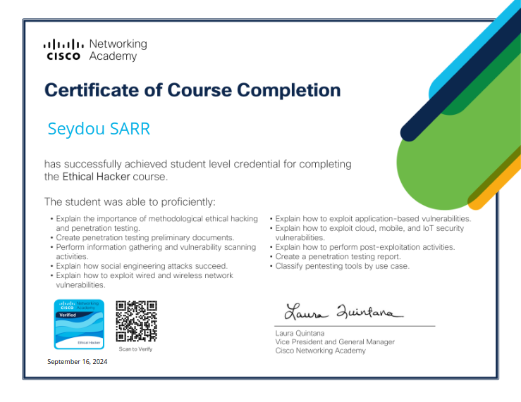
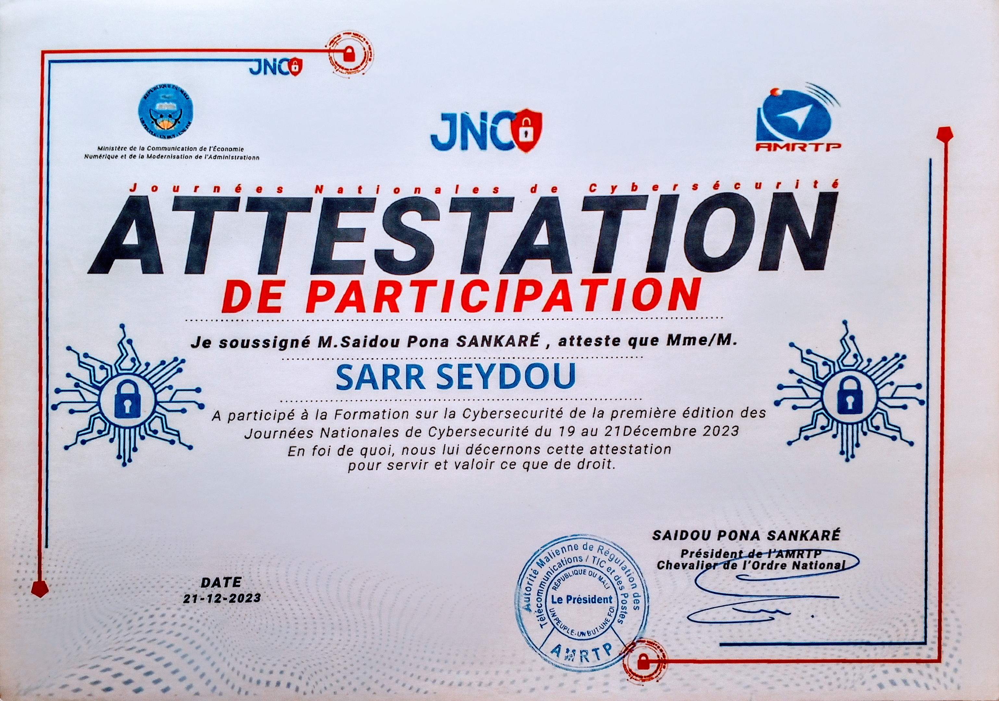
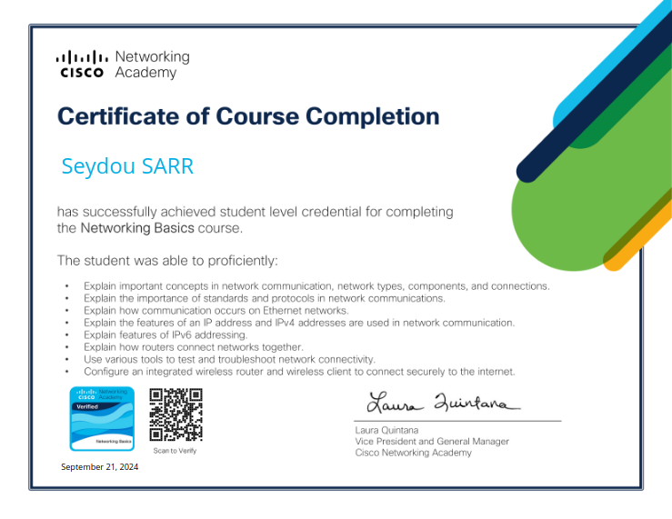

Cybersécurité


- Introduction to Cybersecurity
- Ethical Hacker
- Journées Nationales de Cybersécurité
- EndPoint Security
Une sélection des badges et formations qui appuient le profil : sécurité, réseaux, systèmes et culture numérique.
Les éléments les plus pertinents pour un stage technique, présentés sans surcharge visuelle.


